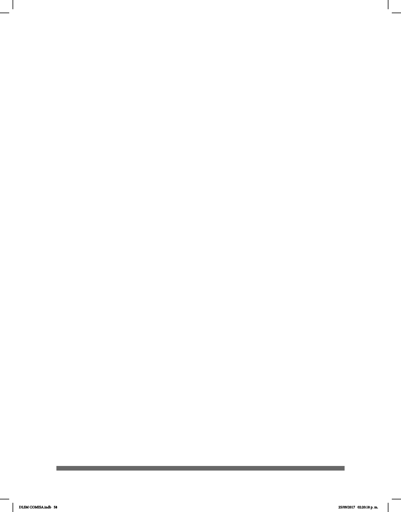

58
Los datos de las investigaciones señalan invariancia izquierda y varianza derecha. Esto
indica que el reclutamiento de las áreas cerebrales del hemisferio izquierdo son las
mismas en la comprensión de la lengua oral y la lengua de señas y éstas se mantienen
constantes, es decir, no hay varianza en ello pese a que la modalidad del input en el
primer caso es auditiva y en el último, visual. Sin embargo, se ha encontrado evidencia
de que la participación del hemisferio derecho (HD) en el procesamiento lingüístico es
mayor en los hablantes nativos de lengua signada. Esto ha sido atribuido al carácter
espacial de la gramática de las LS, ya que el contraste encontrado en la activación del
hemisferio derecho puede deberse a los paradigmas usados, así como a alguna característica
gramatical particular y sutil aún no detectada entre las lenguas estudiadas. Es importante
señalar lo anterior, pues la gran mayoría de los estudios han sido realizados con señantes
sordos de la Lengua de Señas Americana (ASL) y de la Lengua de Señas Británica (BSL)
y son estructuras sígnicas que no todas las variedades de lenguas de señas comparten.
En cuanto a la producción de lengua oral y lengua de señas, parece haber más claridad
en el hemisferio izquierdo con respecto a la participación del hemisferio derecho. La
producción de lengua de señas está completamente lateralizada al hemisferio izquierdo
sin importar la lengua o grupo lingüístico estudiado, esto quiere decir que el hemisferio
izquierdo es el encargado de realizar esta tarea predominantemente. La activación del
área de Broca, parte inferior del lóbulo cerebral izquierdo, fue constante y presente en la
producción de narraciones en ambos tipos de lenguas.
Las modalidades de la entrada de la información de las lenguas orales y las lenguas
de señas son diferentes. Aun así y más allá de tan notable diferencia, lo que se ha
observado son patrones comunes de activación cerebral en sitios especícos que, tanto
señantes sordos como hablantes oyentes, usan para procesar el lenguaje. Un hallazgo
relevante es la activación de áreas del lóbulo temporal en el giro superior temporal en
señantes sordos que jamás han tenido la experiencia de escuchar; estas áreas antes
se creían unimodales y destinadas al procesamiento exclusivamente auditivo-lingüístico
pero ahora sabemos que se activan mientras procesan lengua de señas cuya aferencia
es inicialmente visual. Las razones de esto aún están por ser entendidas y explicadas.
Lo que es un hecho es que el cerebro humano puede desarrollar múltiples vías
cognitivas para la recepción y producción del lenguaje y que la especialización de
hemisferios, lóbulos y regiones cerebrales para el lenguaje no es dependiente o
exclusiva de una modalidad sensorial. Lo que es más probable es que los requerimientos
intrínsecos del lenguaje como la gramática, así como la demanda de mapear conceptos
a una forma comunicable, es decir el léxico, sean los que determinen la especialización
cerebral del lenguaje más allá de su vía de entrada, la aferencia.
Las personas sordas usuarias de una lengua de señas pueden experimentar una
afasia por lesión en el hemisferio izquierdo tal como una persona oyente la padecería de
ser el caso, así como otra alteración en la adquisición de la lengua de señas durante el
DLSM COMISA.indb 58 25/09/2017 02:20:18 p. m.